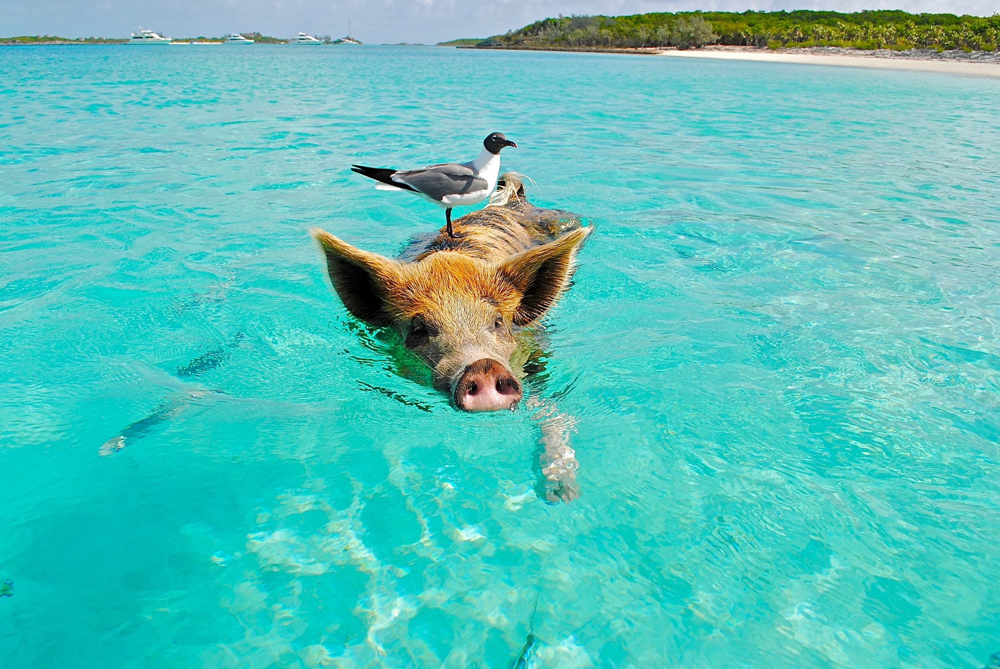
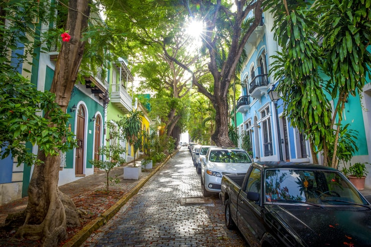
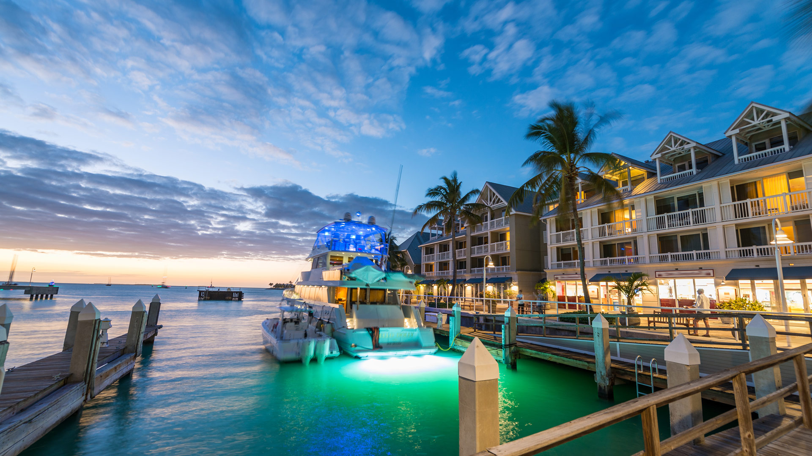
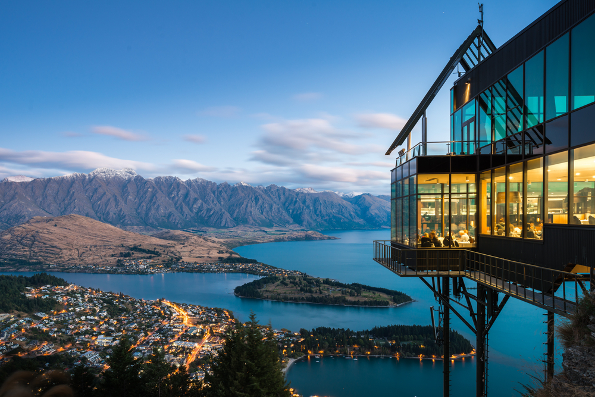

Ultimate Hot Weather Getaways for Sun-Loving Travelers
By Stacey Leasca | Updated on August 26, 2024
Sure, the winter months have their perks — skiing, sledding, snowman building, and the holidays, of course. But the cold! Oh, the cold. It digs deep under your skin, straight to your bones, chilling everything from your toes to your chattering teeth. Fortunately, several warm destinations can offer a much-needed respite from the frigid air.
From island getaways to sizzling cities, here are the best warm-weather places to visit in December, January, and February. Best tourist destination: The Bahamas Underrated hidden gem: Panama Highlands
- Best for families: San Juan, Puerto Rico
- Best for couples: Rangiroa, French Polynesia
- Best for solo travelers: Bangkok
Read on for our full list of recommendations for places to travel to this winter:
1. The Bahamas
Sometimes, you just need to get away from the cold and not think about a single thing. And that's exactly what you can do in The Bahamas, an island chain that's about a three-hour flight from New York City. There are several beautiful destinations to choose from — New Providence Island, Grand Bahama Island, and the Exumas (with their famous swimming pigs) come to mind. Many of the archipelago's inhabited islands are home to some of the country's best all-inclusive resorts, making it an ideal winter getaway for families, couples, or solo travelers.
2. Panama Highlands
While Panama has its share of splendid coastlines, the country's vast interior should not be overlooked, especially for a winter vacation. Temperatures in the highlands are generally in the 60s and 70s year-round, creating ideal conditions for outdoor adventures. Visitor-favorite activities here include bird-watching and, for more adventurous types, crisscrossing the verdant mountains via the famous hanging bridges of Boquete. The region is also home to a stellar coffee scene worth exploring. Book a stay at The Haven, an adults-only wellness resort that makes a great base if you're looking to do a local coffee tour.
3. San Juan, Puerto Rico
If you want to combine some time under the sun with cultural enrichment, look no further than the capital city of Puerto Rico, which has long stretches of white-sand beaches, and historic attractions like the famous Castillo San Felipe del Morro fort. Visitors will also find lots of places to sample delicious Puerto Rican food — make a reservation at Cocina Abierta and thank us later. In San Juan, it's best to go boutique, so check into the O:LV Fifty Five hotel, which features a rooftop pool and bar offering the best views in town.
4. Rangiroa, French Polynesia
Though French Polynesia comprises more than 100 islands, a select few (like Tahiti, Bora Bora, and Moorea) get most of the attention. If you prefer to visit somewhere a little less crowded, try the quiet, sparsely developed atoll of Rangiroa. Located about an hour from Tahiti by air, the island has plenty of pristine beaches and a massive lagoon brimming with sea life. Stay at the Hotel Kia Ora Resort & Spa, which boasts stunning overwater bungalows and villas with private plunge pools. Bangkok Winter happens to be the best time to visit Thailand, especially its capital city, Bangkok. The weather is balmy year-round thanks to the country's tropical location, but the winter months offer slightly more comfortable temperatures, with highs rarely exceeding 90 degrees. To get the most out of this massive city, it's best to book a lengthy visit or hire a local guide — there are tons of tour options available through Airbnb Experiences, for instance, that focus on food, culture, and photography. Don't miss out on the city's canals, either, which you can tour on a long-tail boat. Make your home base the Mandarin Oriental, Bangkok, a long-running honoree in Travel + Leisure's World's Best Awards.
5. Ambergris Caye, Belize
With nonstop flights available from several U.S. cities — including New York, Los Angeles, Dallas, Houston, Atlanta, and Miami — getting to the Central American nation of Belize is easier than you think. And while the country's interior is filled with lush, verdant landscapes home to ancient temples, monkeys, and even a few rare jaguars, the real star is the coast. To experience the white-sand beaches at their best, make your way to Ambergris Caye. Belize's largest island is known for its water sports, including diving and snorkeling around the nearby Belize Barrier Reef and its famous Great Blue Hole. For a luxe visit, book a few nights at Alaia Belize, which provides easy access to the beach as well as a swimming pool that's suspended six stories above the main access corridor, with portholes in the bottom that offer aerial views of the property.
6. Mexico City
Though winter in Mexico City won't have the tropical heat you might expect from the rest of the country — temperatures tend to top out in the upper 60s or low 70s this time of year — it still provides a balmy alternative to snowy U.S. locales. The capital is flush with cultural attractions, including first-rate museums like the stunning Museo Frida Kahlo, incredible shopping at both high-end stores and local markets, and some of the best restaurants in the world (we're looking at you, Pujol). Make your home base Las Alcobas, a luxury hotel offering lavish guest rooms and a tranquil spa — the perfect place to relax after a day of urban exploration.
7. Key West, Florida
Key West is a true delight during the winter months, as the average high temperature doesn't fall below 75 degrees. It's the perfect place for fruity cocktails on the sand, sunset strolls down lively shopping streets, and slice after slice of tangy Key lime pie. Make the most of your time here by booking a stay at the historic Casa Marina Key West, a Curio Collection by Hilton property that finished an extensive renovation in spring 2024. Through the hotel, you can book local food tours, golf outings, and sailboat cruises, or simply sit by the pool and soak in all that Florida Keys sun.
8. Namibia
If you're seeking an African safari this winter without the crowds of a classic destination like Kenya, try the less-traveled terrain of Namibia. Located on Africa's southwest coast, the country offers seclusion, otherworldly landscapes, and near-guaranteed warm weather. It's also the perfect place to see animals like lions, elephants, leopards, and rhinos in their natural environment. There are several outfitters to choose from, but Natural Selection is top-notch, offering numerous safari camp options, including the famed Shipwreck Lodge on the Skeleton Coast.
9. Dubai

When the first cold snap hits, book a flight to Dubai. The desert oasis offers not just warm weather but a mind-boggling array of things to do, from swimming in the Persian Gulf to shopping at some of the world's most luxurious stores and dining at multiple Michelin-starred restaurants. Visit Burj Khalifa, the tallest building in the world at over 160 stories, via an elevator that travels at an ear-popping 33 feet per second. Try Atlantis, The Palm — or Atlantis Dubai's latest addition Atlantis, The Royal — for your overnight stays, each property a veritable playground for those looking to indulge in the finer things in life.
10. Hawaii
Pick an island, any island — or make it a multi-island trip to Hawaii. Start on Oahu, home of the vibrant capital city, Honolulu, and Waikiki Beach. Head to Kauai for a relaxed tropical vibe and scenic hiking and kayaking adventures. Hawaii Island offers the chance to view active volcanoes up close at Hawaii Volcanoes National Park, while Maui is where you'll find some of the poshest resorts on the islands, complete with luxury spas and fancy restaurants. On each island, the Malama Hawaii program connects visitors with volunteer opportunities so you can give back to the local community. Some resorts will even offer special rates and discounts to those who participate, like third-, fourth-, or fifth-night free deals or packages with food and beverage credits.
11. Queenstown
Just because Queenstown is New Zealand's most popular ski town doesn't mean it's not worth visiting when the weather is warmer. Queenstown's summer (December to February) is a great time to take on one of the area's popular hikes, check out the local wineries, or spend some time strolling lakeside in Queenstown Gardens. A scenic trip up the Skyline Queenstown gondola is definitely in order, as is a bungee jump or two if you're feeling brave enough (no pressure!) Whether you choose to indulge in a luxurious stay at one of Queenstown's top resorts — Eichardt's, Rosewood Matakauri, and The Carlin are among the best — or the city is just part of a larger adventure in New Zealand, the weather will likely be between 68 and 86 degrees during these months.
12. Sydney
Lest we forget, it's also summer down under between December and February, with Sydney temperatures hovering around the 65-to-78 degrees mark. Translation: It's beach time! Pack your swimsuit and head to Bondi Beach to see the surfers do their thing or go for a swim at the famous Bondi Icebergs ocean pools (pictured above). If it's too crowded, try the Bronte Baths or Wylie's Baths a few suburbs south in Bronte Beach and Coogee Beach, respectively. Treat yourself to a luxury stay downtown at The Langham, Sydney, or the Park Hyatt Sydney, both located in the historic "The Rocks" neighborhood and within walking distance of Sydney Harbour.
13. Buenos Aires

If you've been waiting for an excuse to learn to tango in Buenos Aires, winter is a wonderful time to head south, with temperatures between 64 and 75 degrees. There's no shortage of dance clubs if you'd like to try out your moves — or tango shows if you'd prefer to leave it to the professionals. Besides dancing, the city is known for its food and wine scene, with shops and tasting rooms selling bottles from Argentina's best vineyards. Stay in the super-luxe Faena Hotel Buenos Aires, home of the popular Rojo Tango dinner show, or Palacio Duhau-Park Hyatt Buenos Aires, just a 10-minute walk from Recoleta Cemetery, where Eva Perón (Evita) was laid to rest.
14. Cape Town
Another southern hemisphere spot known for its wine regions is Cape Town, where winter (well, summer) temperatures tend to be between 68 and 78 degrees during the day. Head 40 minutes out of the city to the Stellenbosch wine region, home of Babylonstoren, a hidden-gem locals' favorite for its vineyards, garden cafe, and other agritourism efforts. Then, retreat to a luxury stay at The Twelve Apostles Hotel & Spa in Camps Bay, where you can indulge in a relaxing treatment or two and enjoy views of the Atlantic Ocean.